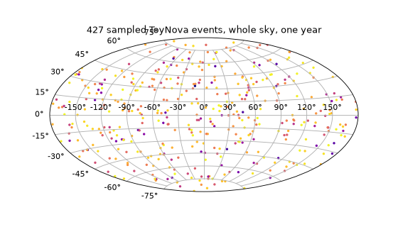

Writing a Custom Transient#
The previous page covered everything you do with a transient class: instantiate it, read off its rate and duration, sample a population from it. This page covers how to build one. If none of the populations shipped with the package (see Transients) fit what you need, this is how you add a new one.
A transient class only ever needs two things: a
SpectralModel and a strict upper bound on how long it
stays relevant. If you don’t already have the SED half of that, see
Writing a Custom Model first – this page picks up exactly where that one leaves
off, and reuses the toy SED built there.
Choosing a Base Class#
Base class |
Provides |
Use it when |
|---|---|---|
|
You just need the SED/duration bookkeeping – e.g. a single fixed source you’ll drive by
hand, or a population with a sampling scheme of your own that has nothing to do with a
cosmological volumetric rate. It has no abstract methods, so it’s directly instantiable
once |
|
everything above, plus |
Your source is an extragalactic population with its own comoving volumetric rate as a
function of redshift, and you want the same
|
The rest of this page builds an ExtragalacticTransient; the bare TransientBase case is
covered briefly at the end.
Building an Extragalactic Transient#
We’ll pair a toy SED with a made-up rate to build ToyNova, an ExtragalacticTransient
subclass that behaves exactly like the five built-in populations from a caller’s point of view. As
in Writing a Custom Model, none of this is meant to describe a real astrophysical
source – it exists so every step can be checked as we go.
Rather than deriving a new _eval from scratch again, this SED is composed from two SEDs
already in the package – GaussianRiseBrokenPowerLawLightcurve
(the same rise/decline shape KilonovaCoolingBlackbodySED
uses) and a fixed-temperature BlackbodySpectrum –
exactly the composition pattern from the previous page:
from astropy import units as u
from uvex_transients.models.core import ComposedSpectralModel
from uvex_transients.models.lightcurves.generic import GaussianRiseBrokenPowerLawLightcurve
from uvex_transients.models.spectra.thermal import BlackbodySpectrum
class ToyNovaSED(ComposedSpectralModel):
_LIGHTCURVE_CLASS = GaussianRiseBrokenPowerLawLightcurve
_SPECTRUM_CLASS = BlackbodySpectrum
That alone is a complete, samplable SpectralModel –
see Models for everything it can already do. Pairing it with a transient class is
just as short:
import numpy as np
from astropy import units as u
from uvex_transients.transients.base import ExtragalacticTransient
# A made-up, redshift-independent volumetric rate normalization, expressed in the
# units it's most naturally quoted in -- events / Gpc^3 / yr, the same convention
# every built-in population's rate constant uses (see e.g. uvex_transients.transients.kilonovae).
_TOY_NOVA_RATE = 1e4 / (u.Gpc**3 * u.yr)
class ToyNova(ExtragalacticTransient):
"""A made-up nova-like population, for demonstration only."""
DEFAULT_MODEL = ToyNovaSED
DEFAULT_DURATION = 20 * u.day
DEFAULT_Z_LIM = 0.05
@property
def rate(self):
return _TOY_NOVA_RATE
def rate_shape(self, z):
z = np.asarray(z)
shape = np.ones_like(z, dtype=np.float64)
return shape if z.ndim > 0 else shape.item()
DEFAULT_MODEL/DEFAULT_DURATION are exactly the two class variables described in
Transients – checked at class-definition time, so a subclass that forgets one
fails immediately at import rather than partway through a Monte Carlo run. DEFAULT_Z_LIM is
new here: it overrides ExtragalacticTransient’s own
default of 10 (very generous for most populations) with this class’s own redshift horizon –
set it, like the built-in populations do, to whatever bound is generous relative to the source’s
actual observable luminosity and your survey’s limiting magnitude.
Declaring a Volumetric Rate#
Rather than implementing event_rate()
(the comoving event rate density \(R(z)=A f(z)\), in events / Mpc3 / yr) directly, a
subclass implements the two pieces it’s built from – the normalization \(A\) and the shape
\(f(z)\) – so that a rate uncertainty (see Rate Uncertainty and All-Sky Yield on
the previous page) attaches to the single normalization rather than needing to be threaded through
a combined function:
Abstract member |
Meaning |
|---|---|
A property returning the fiducial normalization \(A\) ( |
|
The dimensionless redshift dependence \(f(z)\), evaluated at |
Two things about rate/rate_shape are easy to get wrong and worth calling out explicitly:
Warning
Always convert to Mpc:sup:`-3` yr:sup:`-1` yourself, with .to_value(...).
Internally, event_rate (built from rate/rate_shape – see
event_rate()) does
self.rate.to_value(u.Mpc**-3 * u.yr**-1) itself, so returning rate in the wrong units
(say, per Gpc3 instead of per Mpc3) is caught by that conversion, not silently
accepted – but rate_shape gets no such protection: it must already return a plain,
dimensionless array or scalar, not a ~astropy.units.Quantity. Every built-in population’s
rate property ends in .to()/an explicit unit-carrying Quantity for exactly this reason.
Important
``rate_shape`` must be NumPy-vectorized. ExtragalacticTransient calls it once, over the
whole redshift_grid, not in a per-point loop – np.ones_like(z, dtype=np.float64) above
is what makes that work whether z is a scalar or an array. Return a plain array or scalar to
match, as shape if z.ndim > 0 else shape.item() does – the same convention every built-in
rate_shape follows, so a caller can write nova.event_rate(0.01) and get a plain float
back, not a length-1 array.
Everything downstream of event_rate – the rate-weighted redshift distribution, the caching and
invalidation behavior, integrated_rate – is exactly what
From Rate to a Redshift Distribution already describes; nothing about it changes because
rate/rate_shape are user-defined. A rate uncertainty is entirely optional: set
RATE_CI on the class (a pair of
multiplicative (lower, upper) factors on rate, at whatever confidence level your source
reports) if one is available; leave it at its default of None otherwise, exactly like most
built-in populations do today.
Sampling and Simulating Like a Built-In#
From here, ToyNova behaves identically to any of the built-in populations – because, to
every method in the package, it is one:
import numpy as np
import matplotlib.pyplot as plt
from astropy import units as u
from astropy.time import Time
from uvex_transients.models.core import ComposedSpectralModel
from uvex_transients.models.lightcurves.generic import GaussianRiseBrokenPowerLawLightcurve
from uvex_transients.models.spectra.thermal import BlackbodySpectrum
from uvex_transients.transients.base import ExtragalacticTransient
class ToyNovaSED(ComposedSpectralModel):
_LIGHTCURVE_CLASS = GaussianRiseBrokenPowerLawLightcurve
_SPECTRUM_CLASS = BlackbodySpectrum
_TOY_NOVA_RATE = 1e4 / (u.Gpc**3 * u.yr)
class ToyNova(ExtragalacticTransient):
DEFAULT_MODEL = ToyNovaSED
DEFAULT_DURATION = 20 * u.day
DEFAULT_Z_LIM = 0.05
@property
def rate(self):
return _TOY_NOVA_RATE
def rate_shape(self, z):
z = np.asarray(z)
shape = np.ones_like(z, dtype=np.float64)
return shape if z.ndim > 0 else shape.item()
nova = ToyNova()
events = nova.sample_events_on_healpix_grid(
nside=32, t_start=Time("2025-01-01"), duration=365 * u.day, seed=0,
)
fig = plt.figure(figsize=(7, 4))
ax = fig.add_subplot(111, projection="aitoff")
ax.grid(True)
ra = events["coord"].ra.wrap_at(180 * u.deg).radian
ax.scatter(ra, events["coord"].dec.radian, s=4, c=events["redshift"], cmap="plasma")
ax.set_title(f"{len(events)} sampled ToyNova events, whole sky, one year")
(Source code, png, hires.png, pdf)
{kind=link}
{kind=link}

Registering it with a SurveySimulator needs nothing
beyond the usual {name: instance} dict – see Simulation for building
schedule:
from uvex_transients.simulation.core import SurveySimulator
simulator = SurveySimulator(schedule, transients={"toy_nova": ToyNova()}, simulation_seed=0)
catalog = simulator.generate_events(time_bins=6, nside=32)
ToyNova events flow through generate_events, both filtering methods, and
EventCatalog.get_events/Event.simulate_photometry exactly like TDE or kilonova events do,
because none of that code ever branches on which transient type it’s looking at – it only ever
calls the shared TransientBase/ExtragalacticTransient interface this page just
implemented.
A Transient Without a Volumetric Rate#
If your source doesn’t fit the “comoving rate density as a function of redshift” model at all –
a single fixed source at a known distance, say, or a population you intend to sample with entirely
custom code – subclass TransientBase directly instead.
It has no abstract methods, so the two class variables are all it takes:
from astropy import units as u
from uvex_transients.transients.base import TransientBase
class FixedSource(TransientBase):
DEFAULT_MODEL = ToyNovaSED
DEFAULT_DURATION = 20 * u.day
source = FixedSource()
source.sed # ready to sample/evaluate, exactly as on the models overview page
source.duration_limit # 20.0 d
There is no sample_events_on_healpix_grid, event_rate, or redshift sampling here – you
supply the sky position(s), redshift(s)/distance, and explosion time(s) yourself, however your use
case calls for, and use sed directly (or build an
Event by hand) from there.
Testing a New Transient#
Tests live under tests/, mirroring the package layout, so a new transient module
uvex_transients/transients/my_source.py gets a matching tests/transients/test_my_source.py.
Unlike models (tests.models._contracts), there’s no shared inheritable contract for
transient classes to subclass – a straightforward test instantiating the class, sampling a
population with a fixed seed, and checking the result (right columns, plausible redshifts, a
reproducible count for a given seed) is the right level of coverage. See
uvex_transients.transients in the API reference for every method’s exact contract in
the meantime.
Next Steps#
A transient class on its own is a population you can sample – it isn’t yet a survey yield. Pair
it with a real SurveySchedule and a
SurveySimulator, covered in Simulation,
to find out how many of your new population’s events an actual survey would detect. If you plan to
propose it as a real, physically-motivated population for the package (rather than a one-off), see
the Transients gallery for the level of astrophysical detail – adopted rate with citations,
calibrated priors, an observability summary – expected of one.